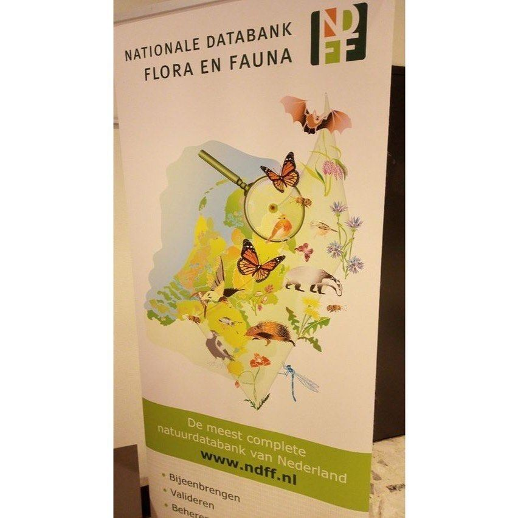

Monarchvlinder, geen Nederlandse vlinder
10 januari 2023 · NDFF
- Op de foto
- Monarchvlinder
- Het ging over
- Nederlandse vlinder

De NDFF adverteerde op de Florondag met wat mooie Monarchvlinders. Beetje beschamend van de belangrijkste natuurbank van Nederland. Of weten ze gewoon iets wat wij nog niet weten? Hij past in ieder geval goed bij onze profielfoto!